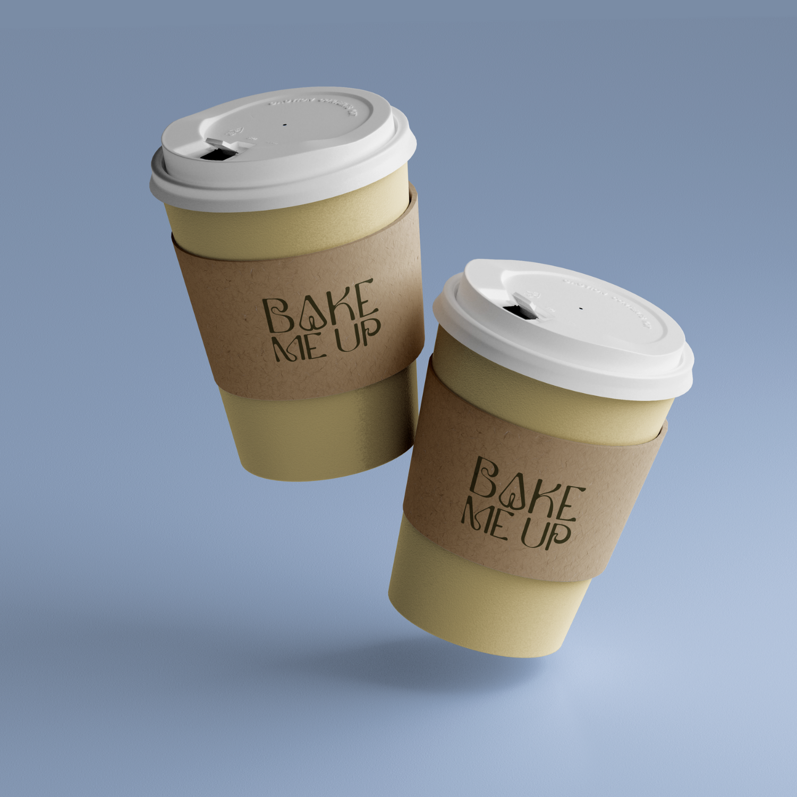
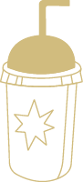

Refugio Cálido • Café & Repostería Fina

Sobre Bake Me Up
Un refugio cálido donde el café se sirve con calma, los postres cuentan historias y cada detalle evoca elegancia.
Un refugio cálido donde el café se sirve con calma, los postres cuentan historias y cada detalle evoca elegancia.
En Bake Me Up elaboramos repostería fina y café de especialidad con una idea muy clara: crear una experiencia que se sienta íntima, elegante y cercana. Nos obsesionan los detalles, el diseño, la textura y ese primer bocado que confirma que valió la pena hacer una pausa.
Trabajamos de forma artesanal, con ingredientes premium, técnicas cuidadas y una producción organizada que respeta la puntualidad, la precisión y la promesa de entregar exactamente lo que el cliente visualizó… y más.
En Bake Me Up la repostería y el café no solo se consumen: se viven.


Elaboramos repostería fina de alta calidad, completamente personalizable y diseñada para satisfacer los requerimientos específicos de cada cliente.
Brindamos una experiencia única de sabor, diseño y atención, ofreciendo soluciones tanto para el antojo del día a día como para momentos especiales.
Nuestro compromiso es mantener un servicio cercano, cálido y profesional, donde la personalización y la familiaridad son parte esencial de nuestra identidad.
Consolidarnos como una de las marcas más prestigiosas, reconocidas y queridas de Puebla y Ciudad de México.
Ser referencia indiscutible en sabor, calidad, diseño y experiencia dentro de la repostería fina y el café de especialidad.
Construir un modelo escalable sin sacrificar nuestra esencia artesanal: excelencia en sabor, presentación impecable y una personalización auténtica.
Son la forma en la que trabajamos, atendemos y cuidamos cada detalle — incluso cuando nadie nos ve.
Ingredientes premium, técnicas cuidadas y presentación impecable. Sin atajos.
Lo que prometemos, lo cumplimos. Transparencia con clientes y equipo.
Amabilidad, profesionalismo y un ambiente donde todos se sientan valorados.
Puntualidad, precisión y responsabilidad incluso bajo presión.
Claridad y orden para trabajar mejor y minimizar errores.
Una sola unidad: cooperación, apoyo mutuo y orgullo por el resultado.
Iniciativa, propuestas y mejora continua como parte de nuestra cultura.
Calma, flexibilidad y enfoque para mantener la calidad ante cualquier reto.
Atención memorable de principio a fin, buscando siempre superar expectativas.

Te invitamos a probar nuestras creaciones o a cotizar ese pastel especial que tienes en mente.